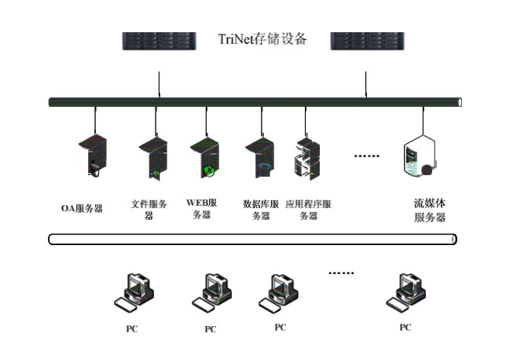

一. 方案背景
在信息化时代，企业每天都会产生大量的电子数据，这些数据被汇总、分析、转移、共享，在企业的业务发展过程中起着十分重要的作用。作为这些珍贵资源的载体，存储系统受到了越来越多的重视,中小企业亦然。尤其在业务科技潮流的推动下，存储作为适应性基础设施的重要组成部分，在中小企业市场也得到了进一步的扩展。同时，随着数据量的不断增加以及数据在企业运作过程中的重要性不断提升,对于数据安全性的要求也在急速提升。因此在选择存储设备,搭建适合自己的存储架构时，系统的安全性、稳定性和高效性是中小企业所要考量的核心。
二. 需求分析
根据中小企业自身的实际情况,它在搭建存储系统时可能会面临如下问题：
1. 中小企业规模小，行业覆盖领域广泛，资金投入有限,
2. 业务持续增长，数据增长迅速，对数据管理带来挑战
3. 应用多元化发展，文件、数据库、共享空间的应用需求日益增多
4. 数据管理和技术支持存在不规范、不完善的状况 5. 存储可扩展性差，无法实现原有存储系统上的灵活扩展
6. 数据的安全性和保密性欠缺
7. 中小企业没有专门管理存储设备的专业技术人才.
讯博网络存储结构方案可以一劳永逸的帮助企业解决这些难题,带给中小企业一个真正价廉物美的存储体系架构。
三. 解决方案
1.网络拓扑图如下

如图所示，TriNet网络存储设备直接连接到IP网络上，前端的各种应用服务器通过网络，以标准协议直接对网络存储进行使用，无需再安装任何客户端。在网络存储上可以分配多个用户空间，供前端各类应用服务器使用，如数据库服务器、文件服务器、流媒体服务器等。同时，可以对分配的空间进行权限管理和认证，确保用户数据的安全可靠。
TriNet IP网络存储系统具有以下特点:
1）低成本、高性价比：高密度的存储空间，大容量的SATA/SAS硬盘，提供 了极具性价比的存储空间，优化的操作系统和传输协议，高效率的日志型文件系统，提供了卓越的性能，保证了用户的应用需求，降低了用户的总拥有成本。
2）高可用性：多点硬件冗余设计，支持多种RAID级别，支持硬盘热插拔， 支持磁盘漫游，多种故障报警措施等功能，保证了存储系统的安全稳定运行。
3）灵活性：TriNet网络存储是真正即插即用的产品，直接挂接在IP网络 中，物理位置灵活，并兼容各种操作系统，可与各种应用服务器实现对接。并且支持从横向到纵向的系统扩展架构，支持从应用的虚拟卷到系统的整体空间的各种不同扩展模式。
4）高性能：采用高性能的硬件平台，Intel多核CPU，大容量ECC系统缓存， 带独立IOP处理器的RAID控制器，SAS/SATA磁盘接口，提供了高效能的传输带宽和IOPS。
5）安全可靠性：支持用户访问权限分配，支持加密的访问模式，支持镜像/ 备份软件，极大的保护了用户的数据安全。
6）服务性：完善的售后服务，专业的技术人员，快速的响应速度，提供给 企业最好的服务体验。